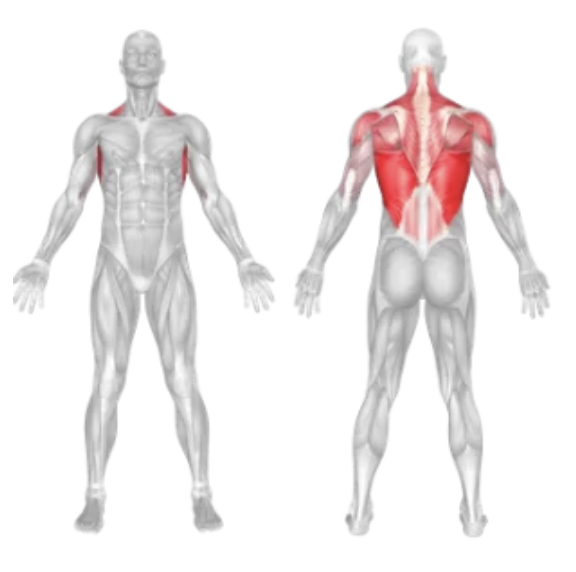
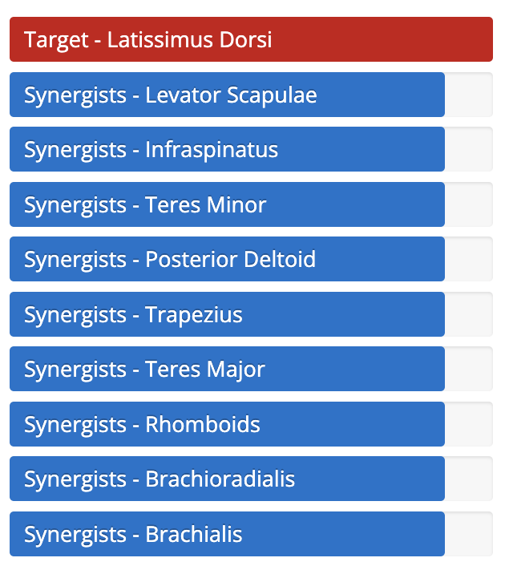

Setup
- Attach a single handle to the high pulley of a lat pulldown machine.
- Sit down facing the machine with your knees secured under the pads.
- Grab the handle with one hand using a neutral or overhand grip.
- Start with your arm fully extended and your torso upright.
- Engage your core and slightly lean back to prepare for the movement.
Execution
- Pull: Drive your elbow down and back to pull the handle towards your side.
- Pause: Squeeze your lat at the bottom of the movement for maximum contraction.
- Return: Slowly extend your arm back to the starting position under control.
- Repeat for the desired number of reps, then switch arms.
Tips for Effectiveness
- Avoid Swinging: Keep your body stable and let your lat do the work.
- Focus on the Elbow: Think about pulling through your elbow rather than your hand.
- Controlled Tempo: Slow, controlled movements enhance muscle engagement and reduce injury risk.
Benefits of Single Arm Lat Pulldown
- Unilateral Strength: Helps identify and correct imbalances between sides.
- Greater Mind-Muscle Connection: Isolates the lat for improved muscle activation.
- Improves Posture: Strengthens the upper back muscles that support posture.
Muscles Worked in Single Arm Lat Pulldown

